Last updated: 2020-05-05
Checks: 7 0
Knit directory: misc/analysis/
This reproducible R Markdown analysis was created with workflowr (version 1.6.1). The Checks tab describes the reproducibility checks that were applied when the results were created. The Past versions tab lists the development history.
Great! Since the R Markdown file has been committed to the Git repository, you know the exact version of the code that produced these results.
Great job! The global environment was empty. Objects defined in the global environment can affect the analysis in your R Markdown file in unknown ways. For reproduciblity it’s best to always run the code in an empty environment.
The command set.seed(1) was run prior to running the code in the R Markdown file. Setting a seed ensures that any results that rely on randomness, e.g. subsampling or permutations, are reproducible.
Great job! Recording the operating system, R version, and package versions is critical for reproducibility.
Nice! There were no cached chunks for this analysis, so you can be confident that you successfully produced the results during this run.
Great job! Using relative paths to the files within your workflowr project makes it easier to run your code on other machines.
Great! You are using Git for version control. Tracking code development and connecting the code version to the results is critical for reproducibility.
The results in this page were generated with repository version 5ecc052. See the Past versions tab to see a history of the changes made to the R Markdown and HTML files.
Note that you need to be careful to ensure that all relevant files for the analysis have been committed to Git prior to generating the results (you can use wflow_publish or wflow_git_commit). workflowr only checks the R Markdown file, but you know if there are other scripts or data files that it depends on. Below is the status of the Git repository when the results were generated:
Ignored files:
Ignored: .DS_Store
Ignored: .Rhistory
Ignored: .Rproj.user/
Ignored: analysis/.RData
Ignored: analysis/.Rhistory
Ignored: analysis/ALStruct_cache/
Ignored: data/.Rhistory
Ignored: data/pbmc/
Untracked files:
Untracked: .dropbox
Untracked: Icon
Untracked: analysis/GHstan.Rmd
Untracked: analysis/GTEX-cogaps.Rmd
Untracked: analysis/PACS.Rmd
Untracked: analysis/SPCAvRP.rmd
Untracked: analysis/compare-transformed-models.Rmd
Untracked: analysis/cormotif.Rmd
Untracked: analysis/cp_ash.Rmd
Untracked: analysis/eQTL.perm.rand.pdf
Untracked: analysis/eb_prepilot.Rmd
Untracked: analysis/eb_var.Rmd
Untracked: analysis/ebpmf1.Rmd
Untracked: analysis/flash_test_tree.Rmd
Untracked: analysis/ieQTL.perm.rand.pdf
Untracked: analysis/m6amash.Rmd
Untracked: analysis/mash_bhat_z.Rmd
Untracked: analysis/mash_ieqtl_permutations.Rmd
Untracked: analysis/mixsqp.Rmd
Untracked: analysis/mr_ash_modular.Rmd
Untracked: analysis/mr_ash_parameterization.Rmd
Untracked: analysis/nejm.Rmd
Untracked: analysis/normalize.Rmd
Untracked: analysis/pbmc.Rmd
Untracked: analysis/poisson_transform.Rmd
Untracked: analysis/pseudodata.Rmd
Untracked: analysis/qrnotes.txt
Untracked: analysis/ridge_iterative_splitting.Rmd
Untracked: analysis/sc_bimodal.Rmd
Untracked: analysis/shrinkage_comparisons_changepoints.Rmd
Untracked: analysis/susie_en.Rmd
Untracked: analysis/susie_z_investigate.Rmd
Untracked: analysis/svd-timing.Rmd
Untracked: analysis/temp.Rmd
Untracked: analysis/test-figure/
Untracked: analysis/test.Rmd
Untracked: analysis/test.Rpres
Untracked: analysis/test.md
Untracked: analysis/test_qr.R
Untracked: analysis/test_sparse.Rmd
Untracked: analysis/z.txt
Untracked: code/multivariate_testfuncs.R
Untracked: code/rqb.hacked.R
Untracked: data/4matthew/
Untracked: data/4matthew2/
Untracked: data/E-MTAB-2805.processed.1/
Untracked: data/ENSG00000156738.Sim_Y2.RDS
Untracked: data/GDS5363_full.soft.gz
Untracked: data/GSE41265_allGenesTPM.txt
Untracked: data/Muscle_Skeletal.ACTN3.pm1Mb.RDS
Untracked: data/Thyroid.FMO2.pm1Mb.RDS
Untracked: data/bmass.HaemgenRBC2016.MAF01.Vs2.MergedDataSources.200kRanSubset.ChrBPMAFMarkerZScores.vs1.txt.gz
Untracked: data/bmass.HaemgenRBC2016.Vs2.NewSNPs.ZScores.hclust.vs1.txt
Untracked: data/bmass.HaemgenRBC2016.Vs2.PreviousSNPs.ZScores.hclust.vs1.txt
Untracked: data/eb_prepilot/
Untracked: data/finemap_data/fmo2.sim/b.txt
Untracked: data/finemap_data/fmo2.sim/dap_out.txt
Untracked: data/finemap_data/fmo2.sim/dap_out2.txt
Untracked: data/finemap_data/fmo2.sim/dap_out2_snp.txt
Untracked: data/finemap_data/fmo2.sim/dap_out_snp.txt
Untracked: data/finemap_data/fmo2.sim/data
Untracked: data/finemap_data/fmo2.sim/fmo2.sim.config
Untracked: data/finemap_data/fmo2.sim/fmo2.sim.k
Untracked: data/finemap_data/fmo2.sim/fmo2.sim.k4.config
Untracked: data/finemap_data/fmo2.sim/fmo2.sim.k4.snp
Untracked: data/finemap_data/fmo2.sim/fmo2.sim.ld
Untracked: data/finemap_data/fmo2.sim/fmo2.sim.snp
Untracked: data/finemap_data/fmo2.sim/fmo2.sim.z
Untracked: data/finemap_data/fmo2.sim/pos.txt
Untracked: data/logm.csv
Untracked: data/m.cd.RDS
Untracked: data/m.cdu.old.RDS
Untracked: data/m.new.cd.RDS
Untracked: data/m.old.cd.RDS
Untracked: data/mainbib.bib.old
Untracked: data/mat.csv
Untracked: data/mat.txt
Untracked: data/mat_new.csv
Untracked: data/matrix_lik.rds
Untracked: data/paintor_data/
Untracked: data/temp.txt
Untracked: data/y.txt
Untracked: data/y_f.txt
Untracked: data/zscore_jointLCLs_m6AQTLs_susie_eQTLpruned.rds
Untracked: data/zscore_jointLCLs_random.rds
Untracked: explore_udi.R
Untracked: output/fit.k10.rds
Untracked: output/fit.varbvs.RDS
Untracked: output/glmnet.fit.RDS
Untracked: output/test.bv.txt
Untracked: output/test.gamma.txt
Untracked: output/test.hyp.txt
Untracked: output/test.log.txt
Untracked: output/test.param.txt
Untracked: output/test2.bv.txt
Untracked: output/test2.gamma.txt
Untracked: output/test2.hyp.txt
Untracked: output/test2.log.txt
Untracked: output/test2.param.txt
Untracked: output/test3.bv.txt
Untracked: output/test3.gamma.txt
Untracked: output/test3.hyp.txt
Untracked: output/test3.log.txt
Untracked: output/test3.param.txt
Untracked: output/test4.bv.txt
Untracked: output/test4.gamma.txt
Untracked: output/test4.hyp.txt
Untracked: output/test4.log.txt
Untracked: output/test4.param.txt
Untracked: output/test5.bv.txt
Untracked: output/test5.gamma.txt
Untracked: output/test5.hyp.txt
Untracked: output/test5.log.txt
Untracked: output/test5.param.txt
Unstaged changes:
Modified: analysis/ash_delta_operator.Rmd
Modified: analysis/ash_pois_bcell.Rmd
Modified: analysis/index.Rmd
Modified: analysis/minque.Rmd
Modified: analysis/mr_missing_data.Rmd
Note that any generated files, e.g. HTML, png, CSS, etc., are not included in this status report because it is ok for generated content to have uncommitted changes.
These are the previous versions of the repository in which changes were made to the R Markdown (analysis/admm_01.Rmd) and HTML (docs/admm_01.html) files. If you’ve configured a remote Git repository (see ?wflow_git_remote), click on the hyperlinks in the table below to view the files as they were in that past version.
| File | Version | Author | Date | Message |
|---|---|---|---|---|
| Rmd | 5ecc052 | Matthew Stephens | 2020-05-05 | wflow_publish(“admm_01.Rmd”) |
I wanted to teach myself something about ADMM (alternating direction method of multipliers) optimization. So I’m going to begin by implementing this for lasso. I’ll make use of the terrific lecture notes from Ryan Tibshirani
I’ll compare with the glmnet results so we will need that library.
library(glmnet)Loading required package: MatrixLoaded glmnet 3.0-2We can write the Lasso problem as: \[\min f(x) + g(x)\] where \(f(x) = (1/2\sigma^2) ||y-Ax||_2^2\) and \(g(x) = \lambda \sum_j |x_j|\). (Usually we assume the residal variance \(\sigma^2=1\) or, equivalently, scale \(\lambda\) appropriately.)
Here \(A\) denotes the regression design matrix, and \(x\) the regression coefficients. Here for reference is code implementing that objective function:
obj_lasso = function(x,y,A,lambda, residual_variance=1){
(1/(2*residual_variance)) * sum((y- A %*% x)^2) + lambda* sum(abs(x))
}The idea of ``splitting" can be used to rewrite this problem as: \[\min f(x) + g(z) \qquad \text{ subject to } x=z.\]
The ADMM steps, also equivalent to Douglas–Rachford, are given in these lecture notes as:
\[x \leftarrow \text{prox}_{f,1/\rho} (z-w)\] \[z \leftarrow \text{prox}_{g,1/\rho}(x+w)\]
\[w \leftarrow w + x - z\]
where the proximal operator is defined as
\[\text{prox}_{h,t}(x) := \arg \min_z [ (1/2t) ||x-z||_2^2 + h(z)]\]
So to implement this we need to proximal operators for \(g\) and \(f\).
For \(g(x)= \lambda \sum_j |x_j|\) the proximal operator \(\text{prox}_{g,t}(x)\) is soft=thresholding with parameter \(\lambda t\) applied element-wise.
soft_thresh = function(x,lambda){
z = abs(x)-lambda
sign(x) * ifelse(z>0, z, 0)
}
x = seq(-10,10,length=100)
plot(x,soft_thresh(x,2),main="soft thresholding operator for lambda=2")
abline(a=0,b=1)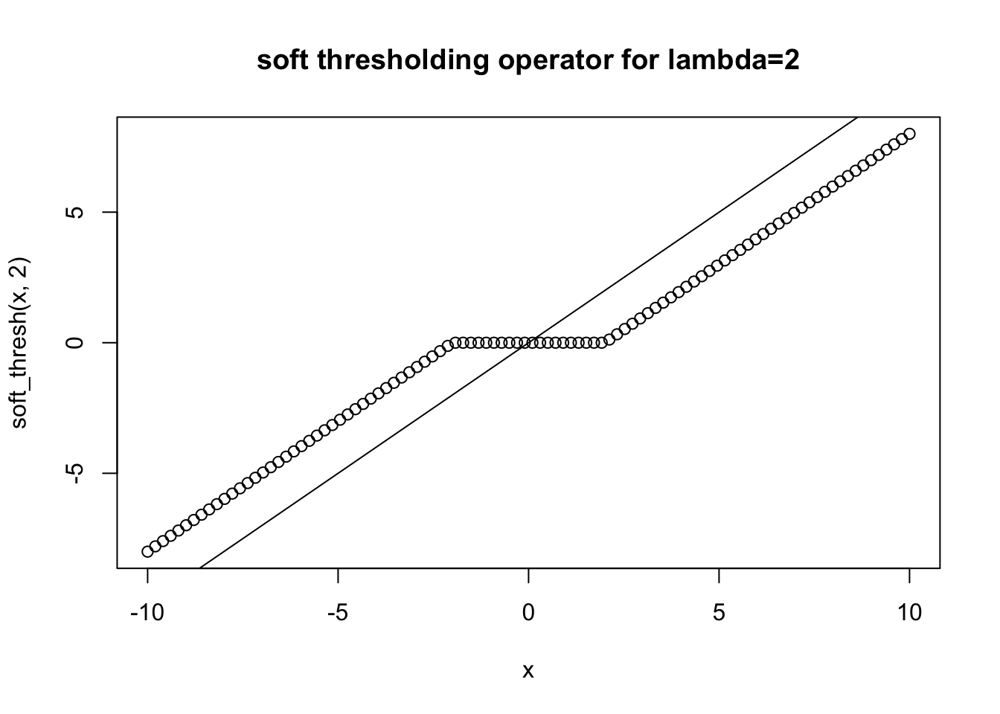
prox_l1 = function(x,t,lambda){
soft_thresh(x,lambda*t)
}For \(f(z) = (1/2\sigma^2) ||y - Az||_2^2\) the proximal operator evaluated at \(x\) is the posterior mode with prior \(z \sim N(\mu_0= x,\sigma_0^2 = t)\).
\[\hat{b} := [A'A + (\sigma^2/\sigma_0^2) I_p]^{-1}(A'y + (\sigma^2/\sigma^2_0) \mu_0)\]
# returns posterior mean for "ridge regression" (normal prior);
# Note that allows for non-zero prior mean -- ridge regression is usually 0 prior mean
ridge = function(y,A,prior_variance,prior_mean=rep(0,ncol(A)),residual_variance=1){
n = length(y)
p = ncol(A)
L = chol(t(A) %*% A + (residual_variance/prior_variance)*diag(p))
b = backsolve(L, t(A) %*% y + (residual_variance/prior_variance)*prior_mean, transpose=TRUE)
b = backsolve(L, b)
#b = chol2inv(L) %*% (t(A) %*% y + (residual_variance/prior_variance)*prior_mean)
return(b)
}
prox_regression = function(x, t, y, A, residual_variance=1){
ridge(y,A,prior_variance = t,prior_mean = x,residual_variance)
}I did a quick simulation to check the ridge code:
n = 1000
p = 20
A = matrix(rnorm(n*p),nrow=n)
b = c(rnorm(p/2),rep(0,p/2))
y = A %*% b + rnorm(n)
bhat = ridge(y,A,1)
plot(b,bhat)
abline(a=0,b=1)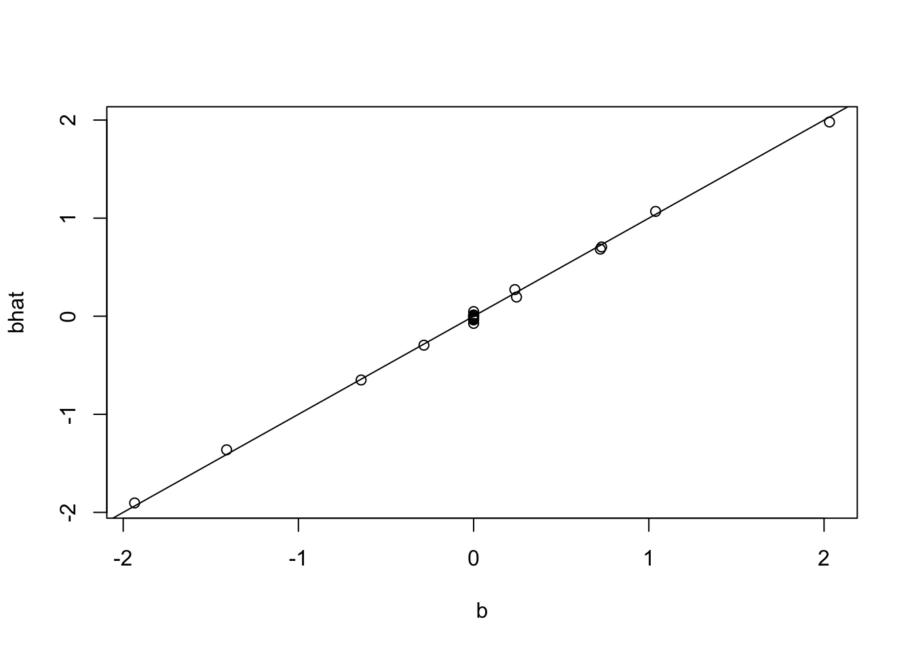
# try shrinking strongly...
bhat = ridge(y,A,1e-4)
plot(b,bhat)
abline(a=0,b=1)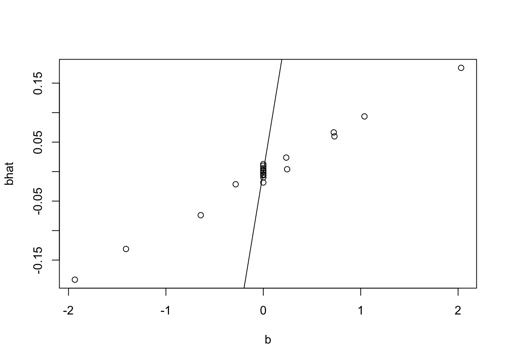
Now we can easily implement admm:
admm_fn = function(y,A,rho,lambda,prox_f=prox_regression, prox_g = prox_l1, obj_fn = obj_lasso, niter=1000, z_init=NULL){
p = ncol(A)
x = matrix(0,nrow=niter+1,ncol=p)
z = x
w = x
if(!is.null(z_init)){
z[1,] = z_init
}
obj_x = rep(0,niter+1)
obj_z = rep(0,niter+1)
obj_x[1] = obj_fn(x[1,],y,A,lambda)
obj_z[1] = obj_fn(z[1,],y,A,lambda)
for(i in 1:niter){
x[i+1,] = prox_f(z[i,] - w[i,],1/rho,y,A)
z[i+1,] = prox_g(x[i+1,] + w[i,],1/rho,lambda)
w[i+1,] = w[i,] + x[i+1,] - z[i+1,]
obj_x[i+1] = obj_fn(x[i+1,],y,A,lambda)
obj_z[i+1] = obj_fn(z[i+1,],y,A,lambda)
}
return(list(x=x,z=z,w=w,obj_x=obj_x, obj_z=obj_z))
}Now run and compare with glmnet. Note that in glmnet to get the same results I need to divide \(\lambda\) by \(n\) because it scales the rss by \(n\) in \(f\). Also glmnet scales y, so we need to scale y to get comparable results.
I tried a range of \(\rho\) values from 1 to \(10^4\). Within the 1000 iterations it converges OK for all but the smallest \(\rho\).
y = y/sum(y^2)
lambda = 100
nrho = 5
rho = 10^(0:(nrho-1))
y.admm = list()
for(i in 1:nrho){
y.admm[[i]] = admm_fn(y,A,rho=rho[i],lambda=lambda)
}
plot(y.admm[[nrho]]$obj_x,type="n")
for(i in 1:nrho){
lines(y.admm[[i]]$obj_x,col=i)
}
y.glmnet = glmnet(A,y,lambda=lambda/length(y),standarize=FALSE,intercept=FALSE)
abline(h=obj_lasso(coef(y.glmnet)[-1], y,A,lambda),col=2,lwd=2)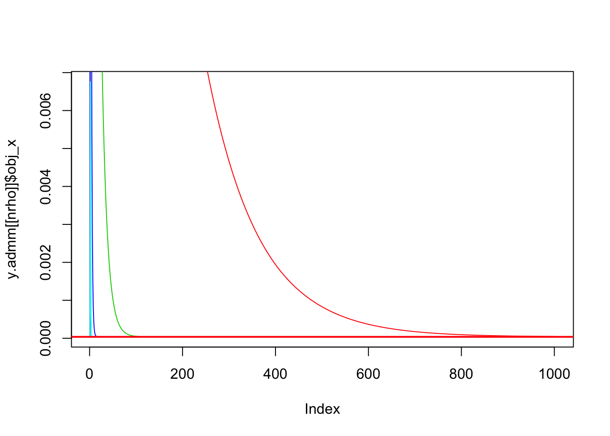
for(i in 1:nrho){
print(obj_lasso(y.admm[[i]]$x[1001,],y,A,lambda))
}[1] 0.02734526
[1] 4.710882e-05
[1] 3.712797e-05
[1] 3.712797e-05
[1] 3.712797e-05obj_lasso(coef(y.glmnet)[-1], y,A,lambda)[1] 3.712797e-05Try a harder example: trend filtering. I use this example as I know it is particularly tricky for non-convex methods. (And also for convex, because \(X\) is poorly conditioned; as we will see, glmnet struggles here.) Also it is nice to visualize.
First simulate data:
set.seed(100)
n = 100
p = n
X = matrix(0,nrow=n,ncol=n)
for(i in 1:n){
X[i:n,i] = 1:(n-i+1)
}
btrue = rep(0,n)
btrue[40] = 8
btrue[41] = -8
Y = X %*% btrue + 0.1*rnorm(n)
norm = mean(Y^2) # normalize Y because it makes it easier to compare with glmnet
Y = Y/norm
btrue = btrue/norm
plot(Y)
lines(X %*% btrue)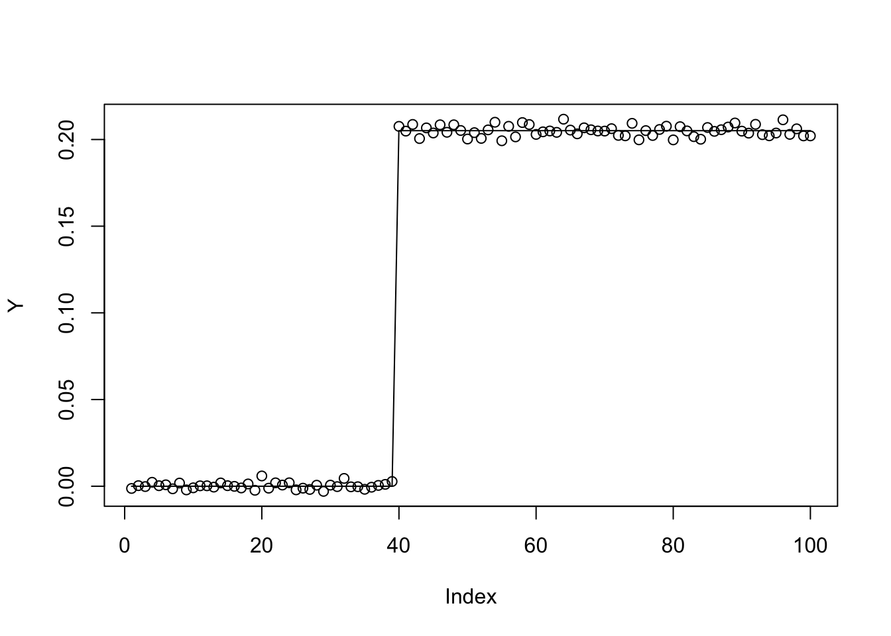
Now run ADMM for 5 different \(\rho\) and glmnet.
y = Y
A = X
niter = 1000
lambda = 0.01
nrho = 5
rho = 10^((0:(nrho-1))-1)
y.admm = list()
for(i in 1:nrho){
y.admm[[i]] = admm_fn(y,A,rho=rho[i],lambda=lambda,niter= niter)
}
plot(y.admm[[1]]$obj_x,type="n",ylim=c(0,0.01))
for(i in 1:nrho){
lines(y.admm[[i]]$obj_x,col=i)
}
y.glmnet = glmnet(A,y,lambda=lambda/length(y),standarize=FALSE,intercept=FALSE,tol=1e-10)
abline(h=obj_lasso(coef(y.glmnet)[-1], y,A,lambda),col=2,lwd=2)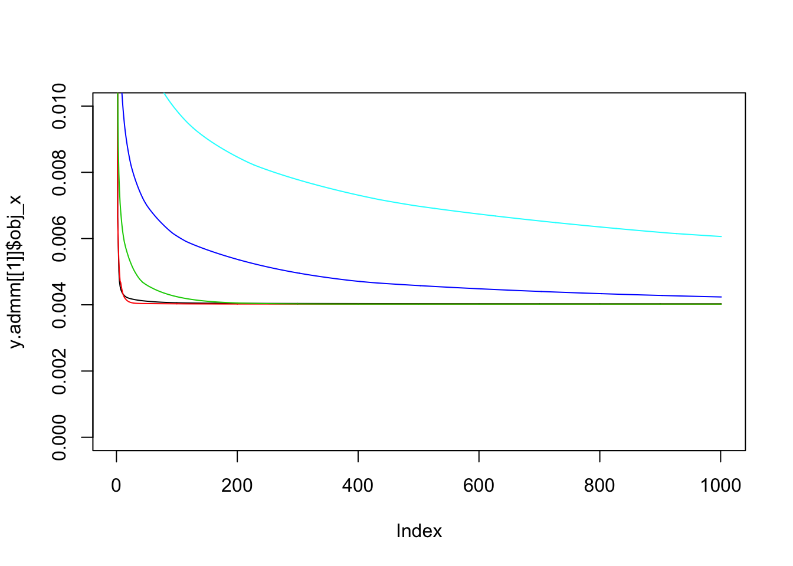
for(i in 1:nrho){
print(obj_lasso(y.admm[[i]]$x[1001,],y,A,lambda))
}[1] 0.004029167
[1] 0.004021352
[1] 0.004021209
[1] 0.004236959
[1] 0.006061422obj_lasso(coef(y.glmnet)[-1], y,A,lambda)[1] 0.0135565obj_lasso(btrue,y,A,lambda)[1] 0.004440848We see that ADMM converges well except for large \(\rho\). But glmnet does not converge to a good answer here.
Plot the fitted values as a sanity check:
plot(y,main="fitted; green=glmnet, black = large rho, red= small rho")
lines(A %*% y.admm[[5]]$x[niter+1,])
lines(A %*% y.admm[[1]]$x[niter+1,],col=2)
lines(A %*% coef(y.glmnet)[-1],col=3)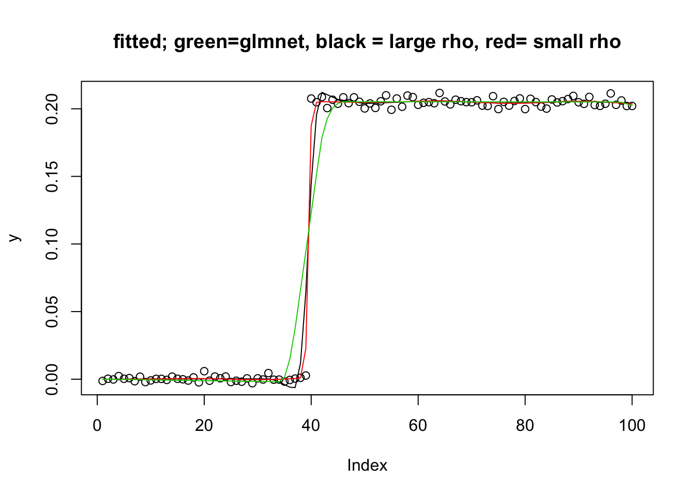
To get some intuition I plot how the iterations proceed over time (first 25 iterations only). First for the smallest \(\rho\). Red is \(z\) and green is \(x\).
par(mfrow=c(5,5))
par(mar=rep(1.5,4))
for(i in 1:25){
plot(y,main = paste0("Iteration",i))
lines(A %*% y.admm[[1]]$x[i,],col=3,lwd=2)
lines(A %*% y.admm[[1]]$z[i,],col=2)
}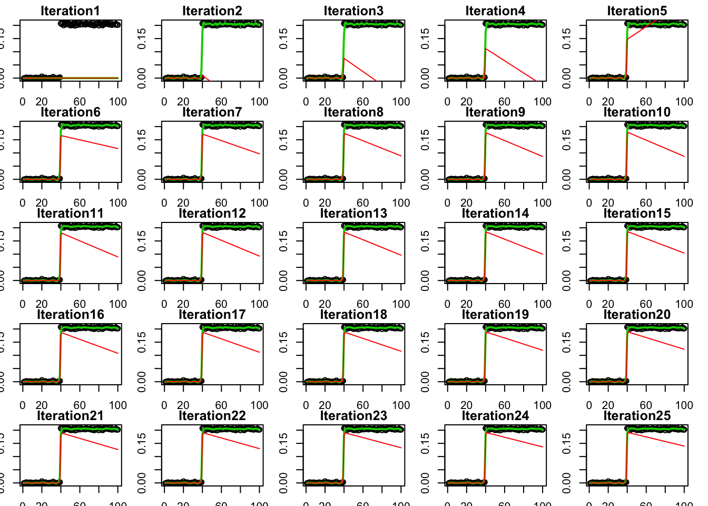
Now an intermediate \(\rho\):
par(mfrow=c(5,5))
par(mar=rep(1.5,4))
for(i in 1:25){
plot(y,main = paste0("Iteration",i))
lines(A %*% y.admm[[3]]$x[i,],col=3,lwd=2)
lines(A %*% y.admm[[3]]$z[i,],col=2)
}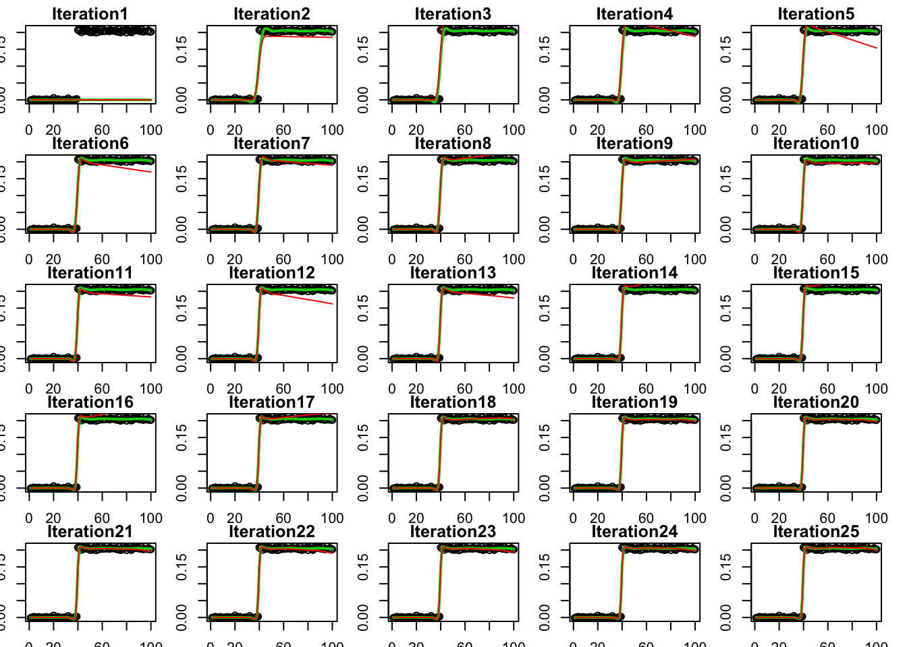
Now for the largest \(\rho\):
par(mfrow=c(5,5))
par(mar=rep(1.5,4))
for(i in 1:25){
plot(y)
lines(A %*% y.admm[[5]]$x[i,],lwd=2)
lines(A %*% y.admm[[5]]$z[i,],col=2)
}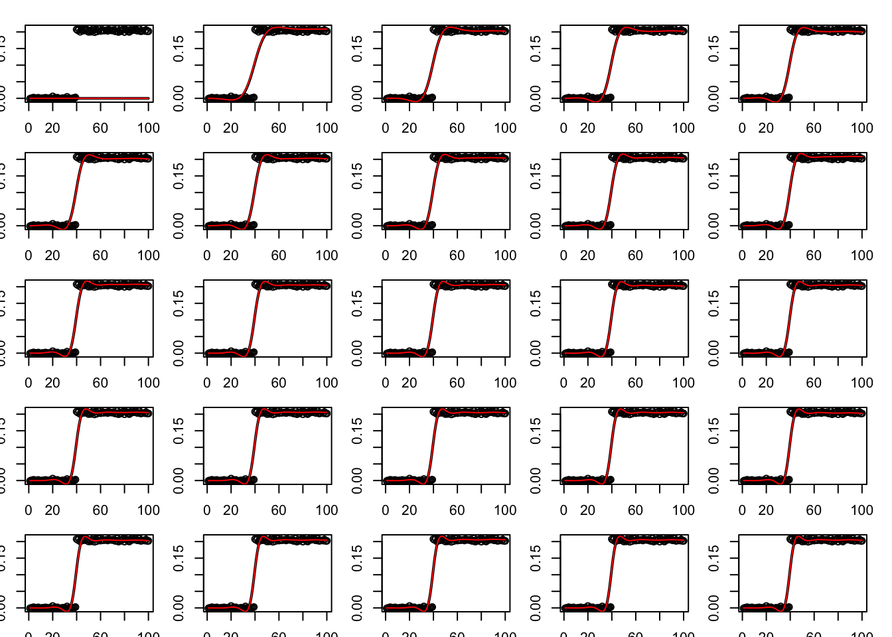
So for large \(\rho\) we have very strong requirement that \(x\) and \(z\) are close together. This slows convergence because they can’t move much each iteration.
Now I wanted to try replacing soft-thresholding with hard-thresholding. Note that as far as I know there are no convergence guarantees for this non-convex case.
hard_thresh = function(x,lambda){
ifelse(abs(x)>lambda, x, 0)
}
prox_l0 = function(x,t,lambda){
hard_thresh(x,lambda*t)
}
obj_l0 = function(x,y,A,lambda, residual_variance=1){
(1/(2*residual_variance)) * sum((y- A %*% x)^2) + lambda* (sum(x>0)+sum(x<0))
}
nrho = 5
rho = 10^((0:(nrho-1))-1)
lambda = .1
y.admm.l0 = list()
for(i in 1:nrho){
y.admm.l0[[i]] = admm_fn(y,A,rho=rho[i],lambda=lambda,prox_g = prox_l0, obj_fn = obj_l0)
}
plot(y.admm.l0[[1]]$obj_z,main="objective fn, small rho")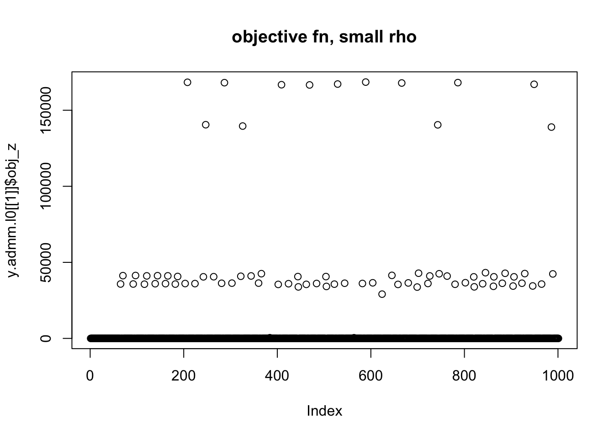
plot(y.admm.l0[[5]]$obj_z,main="objective fn, large rho")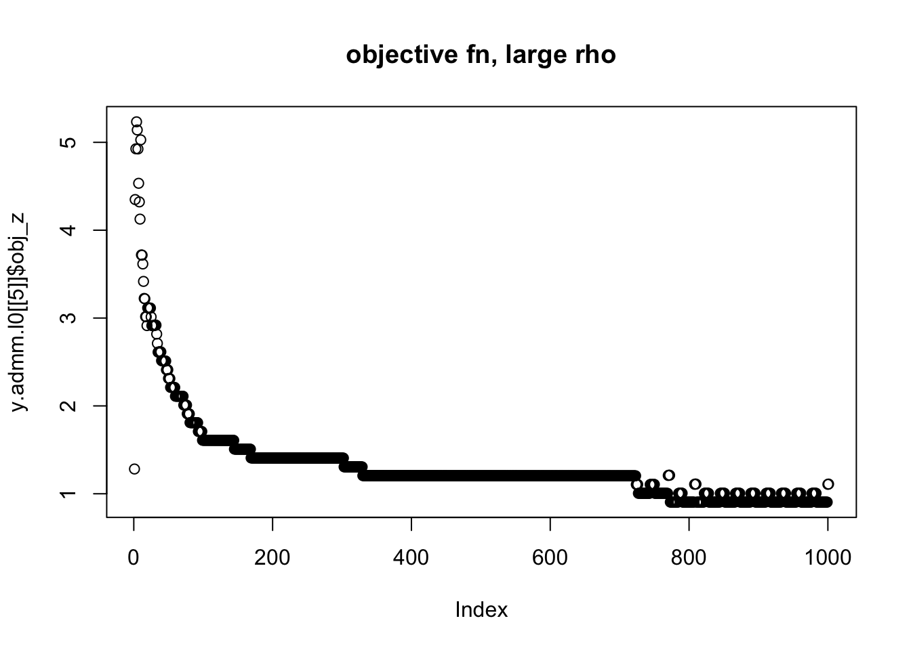
for(i in 1:nrho){
print(obj_l0(y.admm.l0[[i]]$z[1001,],y,A,lambda))
}[1] 1.281841
[1] 1.281841
[1] 0.2051942
[1] 0.4008618
[1] 1.11058obj_l0(btrue,y,A,lambda)[1] 0.200339# try initializing from truth?
#y.admm.l0.true = admm_fn(Y,X,rho,lambda,prox_g = prox_l0, obj_fn = obj_l0,z_init = btrue)
#plot(y.admm.l0.true$obj_z)
#obj_l0(y.admm.l0.true$z[1001,],Y,X,100)So (with 1000 iterations) it converges to OK solution if rho is chosen just right in the middle…
How the iterations proceed for rho very small:
par(mfrow=c(5,5))
par(mar=rep(1.5,4))
for(i in 1:25){
plot(y,main = paste0("Iteration",i),ylim=c(-1,1))
lines(A %*% y.admm.l0[[1]]$x[i,],col=3,lwd=2)
lines(A %*% y.admm.l0[[1]]$z[i,],col=2)
}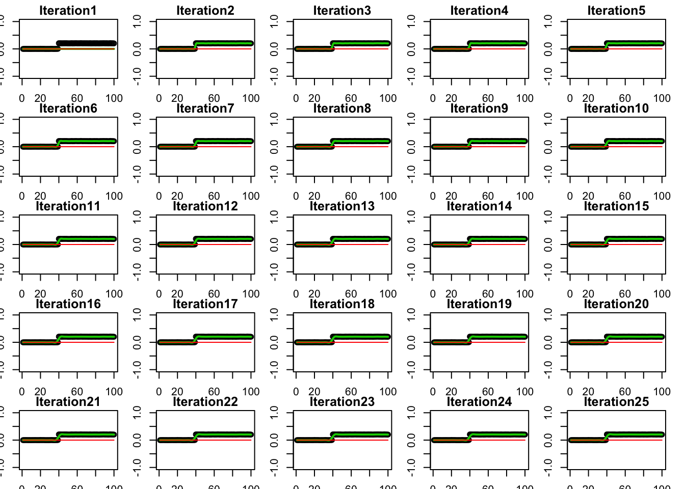
How the iterations proceed for intermediate rho:
par(mfrow=c(5,5))
par(mar=rep(1.5,4))
for(i in 1:25){
plot(y,main = paste0("Iteration",i),ylim=c(-1,1))
lines(A %*% y.admm.l0[[3]]$x[i,],col=3,lwd=2)
lines(A %*% y.admm.l0[[3]]$z[i,],col=2)
}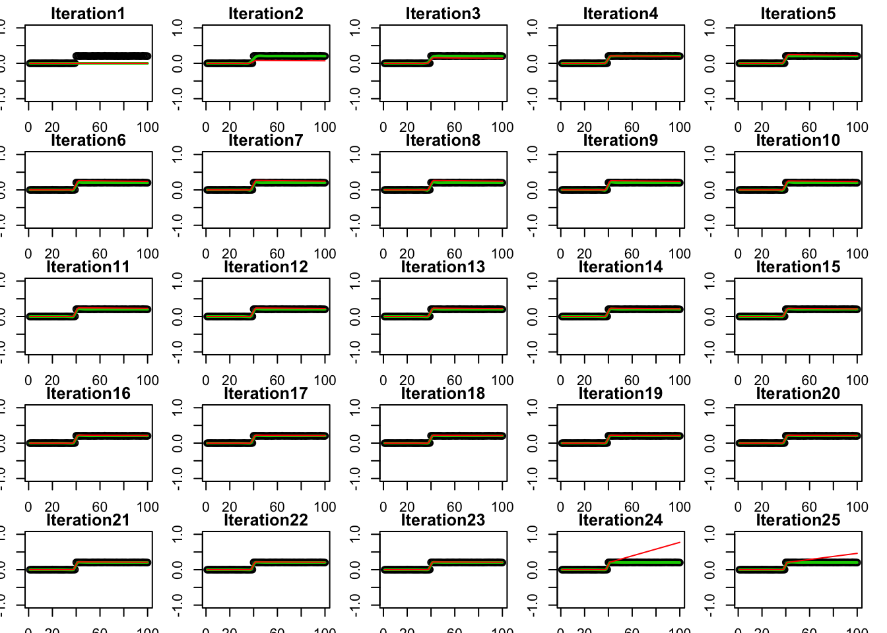
How the iterations proceed for rho very big:
par(mfrow=c(5,5))
par(mar=rep(1.5,4))
for(i in 1:25){
plot(y,main = paste0("Iteration",i),ylim=c(-1,1))
lines(A %*% y.admm.l0[[5]]$x[i,],col=3,lwd=2)
lines(A %*% y.admm.l0[[5]]$z[i,],col=2)
}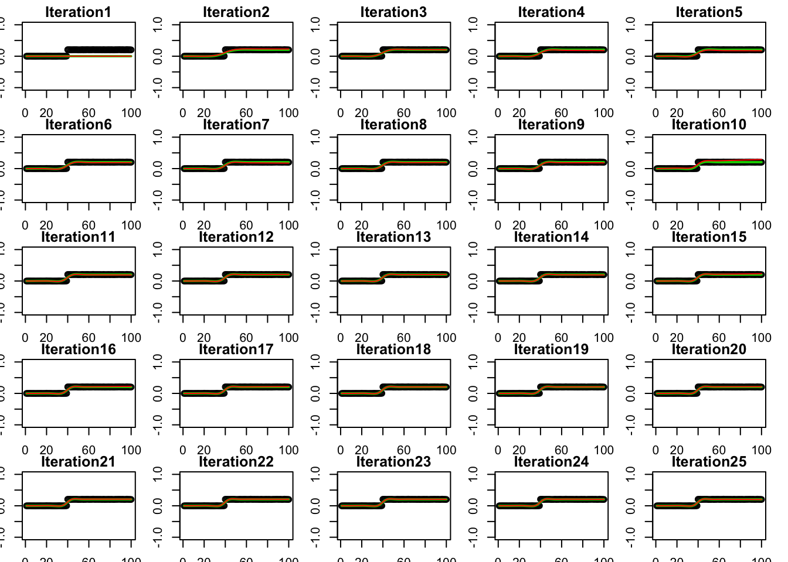
This version was a more direct implementation from Tibshirani’s notes; I used it for debugging.
admm_fn2 = function(y,A,rho, lambda,niter=1000){
p = ncol(A)
x = z = w = rep(0,p)
obj = rep(0,niter)
for(i in 1:niter){
inv = chol2inv(chol( t(A) %*% A + rho*diag(p) ))
x = inv %*% (t(A) %*% y + rho*(z-w))
z = soft_thresh(x+w,lambda/rho)
w = w + x - z
obj[i] = obj_lasso(x,y,A,lambda)
}
return(list(x=x,z=z,w=w,obj=obj))
}
sessionInfo()R version 3.6.0 (2019-04-26)
Platform: x86_64-apple-darwin15.6.0 (64-bit)
Running under: macOS Mojave 10.14.6
Matrix products: default
BLAS: /Library/Frameworks/R.framework/Versions/3.6/Resources/lib/libRblas.0.dylib
LAPACK: /Library/Frameworks/R.framework/Versions/3.6/Resources/lib/libRlapack.dylib
locale:
[1] en_US.UTF-8/en_US.UTF-8/en_US.UTF-8/C/en_US.UTF-8/en_US.UTF-8
attached base packages:
[1] stats graphics grDevices utils datasets methods base
other attached packages:
[1] glmnet_3.0-2 Matrix_1.2-18
loaded via a namespace (and not attached):
[1] Rcpp_1.0.4 knitr_1.28 whisker_0.4 magrittr_1.5
[5] workflowr_1.6.1 lattice_0.20-40 R6_2.4.1 rlang_0.4.5
[9] foreach_1.4.8 stringr_1.4.0 tools_3.6.0 grid_3.6.0
[13] xfun_0.12 git2r_0.26.1 iterators_1.0.12 htmltools_0.4.0
[17] yaml_2.2.1 digest_0.6.25 rprojroot_1.3-2 later_1.0.0
[21] codetools_0.2-16 promises_1.1.0 fs_1.3.2 shape_1.4.4
[25] glue_1.4.0 evaluate_0.14 rmarkdown_2.1 stringi_1.4.6
[29] compiler_3.6.0 backports_1.1.5 httpuv_1.5.2